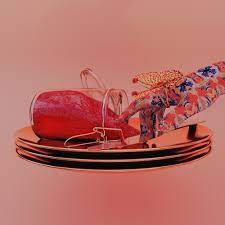
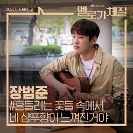
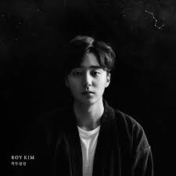

취미
음악듣기
딱히 좋아하는 장르가 있기보다는 여러 장르 음악을 많이 듣습니다.
요새 즐겨듣는 가수는 선우정아, dpr live, dpr ian입니다.
제가 추천할 만한 노래는 dpr live의

jam & butterfly
입니다.
기타
잘 치지지는 못하고, 유튜브로 독학했습니다
요새는 기타를 잘 안쳐서 할 수 있는 곡이 거의 없지만.
제가 자신있는 곡은 장범준의

흔들리는 꽃들 속에서 네 샴푸 향이 느껴진 거야
입니다.
혼코노
이것도 잘 부르지는 못하지만, 코인 노래방 가는 거 좋아합니다.
UNIST오고 1달동안 한 5만원 정도 썼습니다.
그래서 홈페이지 다 만들고 또 갈 예정입니다. 노래방 가고 싶네요.
저의 노래방 애창곡은 로이킴의

북두칠성
입니다.
-돌아가기